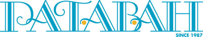
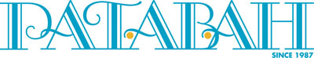

A life of strength, faith, evolution and triumph
A life of strength, faith, evolution and triumph

This is the story of a young girl whose life’s trajectory changed one fateful day owing to a fall. It chronicles her journey through denial, strength, resilience, confusion, pain, tears, brokenness, surrender, and finally, freedom.
The book also contains tales about hope, faith and charity found in the least expected places, the role of presents parents and finding God through one's continued process to evolve.
You’ll see her finding herself, coming into her own, fighting for her life. You’ll dream her dreams and read about determination.
 

Adenike Oyetunde is a lawyer with almost ten years at the Nigerian Bar Association. Though not in active practice, she delved into the world of media (radio) until a few months ago. She had the only legal show on the air taking on topical issues and helping to solve numerous problems while giving free legal counsel alone or with the help of others.
She had been nominated for several media awards, winning some and getting others for recognition on the job.
Adenike in 2017, was a speaker at the TedX Gbagada, Lagos speaking on Philanthropy and the role of empathy in the human society.
Her work has earned her several platforms, spanning for hosting events, moderating several sessions and been part of many panels.
Adenike's passions include driving conversations around the plight of disability in Nigeria. This passion has led her to participate in and organise initiatives and social groups, specifically for amputees and other disabilities.


Amputees United Initiative is an initiative dedicated to enhancing the quality of life for amputees. With the support of the public, we are helping amputees live well with limb loss, raising awareness about management of limb loss and providing a platform to help them live their full and thriving lives.
The initiative was birthed from a place of personal journey to provide a safe haven for amputees, fresh and old, where journeys will be shared and experience heard, to strengthen each other, as these special humans continue to clamour for an inclusive society geared towards preparing Lagos and Nigeria towards the United Nations path to achieving an inclusive society in line with SDG 17.
Amputees United Initiative also creates a platform for persons with special needs to discuss matters affecting them specifically; ranging from educational needs, medical needs and infrastructural needs.
The ultimate goal of the initiative is to create a facility encompassing amenities to promote an adaptive lifestyle (learning to use prosthetic limbs), establish recreational centres that are suitable for people with special needs, a gym specifically for PWDs; equipped with cycling and swimming facilities.
Speaking & Author Engagement
me@adenikeoyetunde.com
Designed with love by:
Witts & Stratts